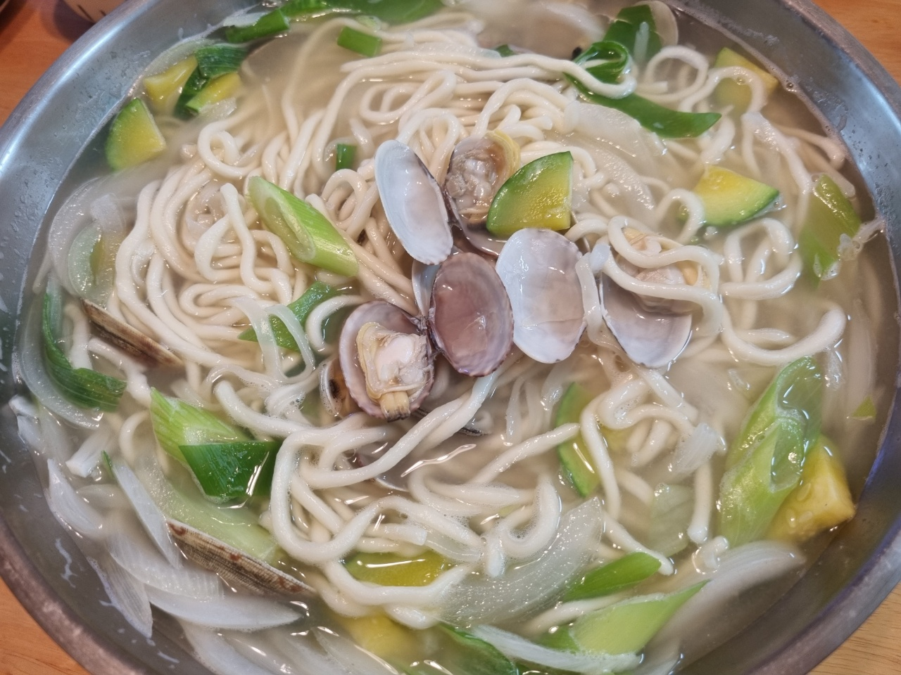

바지락칼국수

- 재료
칼국수면 4인분, 바지락 200g, 애호박 1/3개, 양파 1/2개, 대파 1/2개, 멸치 한 줌, 다시마 2장,
건새우 한 줌, 물 1.7L, 참치액 1T, 소금, 후추 톡톡, 청양고추 2개
- 조리순서
- 애호박 1/3개는 반달 모양으로, 대파 1/2개는 비스듬히 쏭쏭, 양파 1/2개는 채썰어서 준비합니다.
바지락은 소금물에 해감 후 여러번 행궈서 깨끗하게 씻어줍니다.
- 냄비에 물 1.7L를 붓고, 멸치 한 줌, 다시마 2장, 건새우 한 줌을 넣어 육수를 끓입니다.
팔팔 끓으면 육수용 재료는 다 건져냅니다.
- 육수에 해감한 바지락을 넣고, 바지락이 벌어지면 따로 건져놓습니다.
- 칼국수 면은 따로 끓이면 훨씬 깔끔합니다.
끓는 물에 5분간 칼국수 면을 삶은 후 체에 받쳐 물기를 빼줍니다.
- 육수에 애호박, 양파를 먼저 넣고 끓입니다.
이어서 반으로 자른 청양고추와 참치액 1T를 넣고 소금으로 간을 맞춰줍니다.
- 마지막으로 바지락, 칼국수 면, 대파를 넣으면 완성입니다.